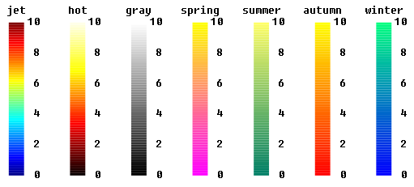

ColorMapsLibrary of functions returning color maps |
|
Package Contents
Information
This information is part of the Modelica Standard Library maintained by the Modelica Association.
This package contains functions that return color maps. A color map is a Real[:,3] array where every row represents a color. Currently the following color maps are returned from the respective function:
